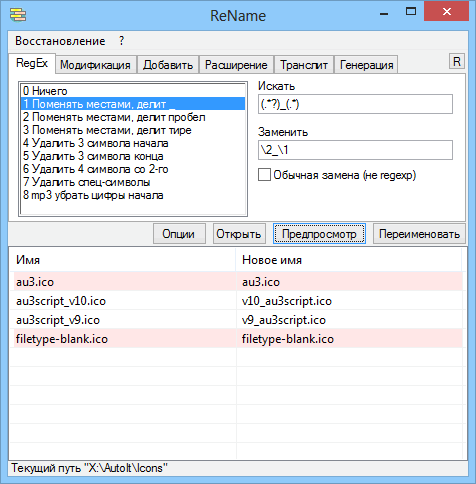

ReName
Назначение
Пакетное переименование файлов.

Взаимосвязанные
Rename
Имеет 6 вкладок для переименования.
Кнопка "Тест" - для временного просмотра, отображает не более 200 файлов (можно указать другое число) и не переименовывает файлы.
Кнопка "Старт" для переименования файлов. Для начала нужно перетащить каталог в таблицу утилиты (отдельные файлы или несколько каталогов не принимаются).
По умолчанию операции будут происходить со всеми файлами, включая вложенные каталоги (эти параметры можно изменить в опциях).
Вкладка "RegEx" - вкладка для переименования регулярным выражением (в опциях - "обрабатывать расширения файлов"). Имеет 8 образцов-примеров. Вкладка требует знания регулярных выражений, но всё же может выполнить обычную замену текста в имени. Файлы, которые не будут переименованы по причине отсутствия изменения имени подсвечиваются красным фоном.
Вкладка "Добавить" позволяет в начало или конец имени добавить текст или некоторую информацию о файле (размер, дату).
Вкладка "Расширение" выполняет операции с расширением файлов. Расширение определяется наличием точки в имени файла, после которой символы расширения. Выбор "Добавить" выполняет добавление расширения файлам не имеющим его.
Меню "Восстановление" позволяет восстановить имена файлов, если результат переименования не устраивает. Утилита содержит последнюю операцию переименования в виде списка текущих и предыдущих имён и может восстановить предыдущие имена. Сохранив список переименования можно также восстановить имена позже, но при условии, что имена файлов не изменялись, иначе многократно изменённые имена файлов уже не восстановятся и утилита выдаст список не переименованных файлов, которые не были найдены.
Кнопкой "Создать список MD5" можно создать особый список восстановления, который позволяет кнопкой "Восстановить по MD5" восстановить имена, даже если их многократно переименовывать. Порядок действий следующий: перед переименованием необходимо создать список используя "Создать список MD5", далее можно многократно выполнять действия переименования файлов. Для восстановления первоначальных имён используйте пункт меню "Восстановить по MD5", открыв файл-список для восстановления MD5 и выполнить восстановление. Если в папке находятся два одинаковых файлов с разными именами, то они индексируются для правильного последующего восстановления. Время создания списка MD5 зависит от общего размера файлов - это тоже недостаток, "благодаря" которому создание списка имён для библиотеки видео файлов займет много времени, что соизмеримо с копированием этих файлов.
В утилиту добавлены функции переименования, которые необходимы в первую очередь для повседневных задач.
Пишите о своих потребностях в переименовании, возможно добавлю функцию или добавлю образец в список регулярных выражений.